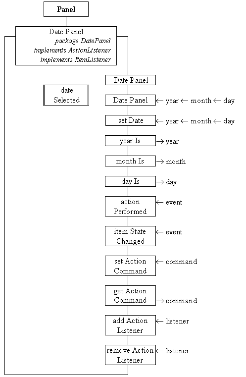

The DatePanel class has to implement the entire interface shown in Figure 3.7 and designed in Figure 3.11, including an instance of the MonthPanel class. It is responsible for configuring the MonthPanel when it is first constructed and for reconfiguring it whenever the year or month is changed by user. It is also responsible for generating an action event every time the user changes the date, and for providing inquiry methods to allow a client to determine what the date has been changed to. It also offers the set of methods, setCommandString(), getCommandString(), addActionListener() and removeActionListener() which allow it to be used by a client in a manner essentially identical to pre-supplied AWT components, such as Button, which also generate ActionEvents for arbitrary components to listen to. The DatePanel class diagram is given in Figure 3.15.

Figure 3.15 The DatePanel class diagram.
The first, default, constructor will create a DatePanel showing the current date. The second constructor allows a particular date to be specified and the setDate() method allows a particular date to be set once an instance has been created. The yearIs(), monthIs() and dayIs() methods will return the current settings of the interface.
The actionPerformed() method and itemStateChanged() methods are needed to satisfy the requirements of the ActionListener and the ItermListener interfaces respectively. It has to implement these interfaces as it listens to the ItemSelectedEvents events generated by its own Choice components and also listens to the ActionEvents generated by its own MonthPanel component. The final four public methods are needed for this component to interoperate with other AWT Components as explained above. The implementation of this class as far as the end of its first constructor is as follows.
0001 // Filemake DatePanel.java.
0002 // Provides an interactive calendar panel allowing
0003 // safe an unambiguous input of a calendar date.
0004 //
0005 // Written for JI book, Chapter 3 see text.
0006 // Fintan Culwin, v 0.2, August 1997.
0007
0008 package DatePanel;
0009
0010 import java.awt.*;
0011 import java.awt.event.*;
0012
0013 import DatePanel.DateUtility;
0014 import DatePanel.MonthPanel;
0015
0016 public class DatePanel extends Panel
0017 implements ActionListener, ItemListener {
0018
0019 private MonthPanel monthPanel;
0020 private Choice centuryChoice;
0021 private Choice decadeChoice;
0022 private Choice yearChoice;
0023 private Choice monthChoice;
0024
0025 private String actionCommand = null;
0026 private ActionListener itsListener;
0027
0028 private static String monthNames[] = { "Jan", "Feb", "Mar", "Apr",
0029 "May", "Jne", "Jly", "Aug",
0030 "Sep", "Oct", "Nov", "Dec" };
0031
0032 public DatePanel() {
0033
0034 this( DateUtility.yearIs(),
0035 DateUtility.monthIs(),
0036 DateUtility.dayOfMonthIs());
0037 } // End DatePanel default constructor.
0038
The default constructor, on lines 0032 to 0037, indirects to the alternative constructor passing the current year, month and day number, obtained from the DateUtility class. In the alternative constructor the components indicated in Figure 3.11 are constructed and assembled as follows.
0040 public DatePanel( int year, int month, int day) {
0041
0042 int thisOne;
0043 Panel topPanel = new Panel();
0044 Panel topLeftPanel = new Panel();
0045 Panel topRightPanel = new Panel();
0046
0047 this.setLayout( new BorderLayout( 4, 4));
0048 topPanel.setLayout( new GridLayout( 1, 2, 4, 4));
0049 topLeftPanel.setLayout( new FlowLayout( FlowLayout.CENTER, 4, 4));
0050 topRightPanel.setLayout( new FlowLayout( FlowLayout.CENTER, 4, 4));
0051
0052 monthPanel = new MonthPanel( this);
0053
0054 centuryChoice = new Choice();
0055 centuryChoice.addItemListener( this);
0056 centuryChoice.addItem( "19");
0057 centuryChoice.addItem( "20");
0058 centuryChoice.addItem( "21");
0059
0060 decadeChoice = new Choice();
0061 decadeChoice.addItemListener( this);
0062
0063 yearChoice = new Choice();
0064 yearChoice.addItemListener( this);
0065
0066 for ( thisOne = 0; thisOne < 10; thisOne++){
0067 decadeChoice.addItem( Integer.toString( thisOne));
0068 yearChoice.addItem( Integer.toString( thisOne));
0069 } // End for.
0070
0071 monthChoice = new Choice();
0072 monthChoice.addItemListener( this);
0073 for ( thisOne = 0; thisOne < 12; thisOne++){
0074 monthChoice.addItem( monthNames[ thisOne]);
0075 } // End for.
0076
0077 topLeftPanel.add( centuryChoice);
0078 topLeftPanel.add( decadeChoice);
0079 topLeftPanel.add( yearChoice);
0080
0081 topRightPanel.add( monthChoice);
0082
0083 topPanel.add( topLeftPanel);
0084 topPanel.add( topRightPanel);
0085 this.add( topPanel, "North");
0086 this.add( monthPanel, "Center");
0087
0088 this.setDate( year, month, day);
0089 } // End DatePanel constructor.
The constructor commences by constructing the three Panels indicated in Figure 3.11, on lines 0043 to 0045 and, together with the Applet Panel, have appropriate layouts specified on lines 0047 to 0050. The monthPanel is constructed on line 0052 with its ActionListener specified as itself. The centuryChoice Choice component is constructed on lines 0054 to 0058 with its ItemListener specified as itself and three Items indicating the centuries added to it. The loop on lines 0066 to 0069 populates the decadeChoice and yearChoice Choice components, which are constructed on lines 0060 and 0063, with their ItemListeners also specified as the DatePanel currently being constructed. The monthChoice is then constructed, has itself registered as its listener, and is populated on lines 0071 to 0075 using Strings obtained from the class wide monthNames[] array which was declared on lines 0028 to 0030.
Having constructed all the constituent Components they are added to their appropriate Panels and the Panels then added together to produce the required visual layout on lines 0077 to 0086. Finally the setDate() method is called on line 0088 passing on the arguments received by the constructor. The implementation of the setDate() method is as follows.
0092 public void setDate( int year,
0093 int month,
0094 int dayOfMonth) {
0095
0096 centuryChoice.select( (year / 100) - 19);
0097 decadeChoice.select( (year % 100) / 10);
0098 yearChoice.select( year % 10);
0099 monthChoice.select( month -1);
0100 monthPanel.reConfigure( year, month, dayOfMonth);
0101 dateSelected();
0102 } // End setDate.
In this method the centuryChoice, decadeChoice and yearChoice select() methods are called, on lines 0096 to 0098, passing as arguments a suitably arithmetically manipulated value derived from the year argument. On line 0099 the monthChoice select() method is called passing on the month argument. This argument is received in the conventional 1 to 12 range of values but the indexes of the items on the Choice menu are in the range 0 to 11 and so it's decremented value is passed. The effect of these methods is to set the Choice menus at the top of the panel to indicate the year and month required. On line 0100 the three arguments are passed to a call of the monthPanel reConfigure() method which, as explained above, will cause it to lay itself out as appropriate to the year and month specified with the day highlighted. The final step is to call dateSelected() which, as will be explained below, will cause an ActionEvent to be generated by the DatePanel.
The three inquiry methods retrieve the appropriate value from the appropriate components of the interface, as follows.
0104 public int yearIs() {
0105 return Integer.valueOf( centuryChoice.getSelectedItem() +
0106 decadeChoice.getSelectedItem() +
0107 yearChoice.getSelectedItem()
0108 ).intValue();
0109 } // End yearIs.
0110
0111
0112 public int monthIs(){
0113 return monthChoice.getSelectedIndex() +1;
0114 } // End monthIs.
0115
0116
0117 public int dayIs(){
0118 return monthPanel.dayIs();
0119 } // End dayIs.
The yearIs() method returns the year indicated on the interface by catenating together the Strings obtained from the three Choice components getSelectedItem() methods and then converting the String to a primitive int. As with the setting of an item on the monthChoice menu, the range of values returned by monthIs() is converted from the 0 to 11 range into the 1 to 12 range when the index of the selected item is obtained using the Choice getSelectedIndex() method on line 0113. The dayIs() method determines which day of the month is currently indicated by using the dayIs() action of the encapsulated monthPanel.
As explained above the actionPerformed() method is called whenever a new date is selected on the monthPanel and, as it does not need to reconfigure the monthPanel, indirects immediately to the private dateSelected() method in order to generate an ActionEvent to notify listeners that the date has changed. The itemStateChanged() method will be called whenever one of the Choice menus has a different item selected and, as this will cause the pattern of days in the month now indicated to change, the monthPanel reConfigure() method is called before it too indirects to the dateSelected() method. The implementation of these two methods are as follows.
0122 public void actionPerformed( ActionEvent event) {
0123 dateSelected();
0124 } // End actionPerformed.
0125
0126
0127 public void itemStateChanged( ItemEvent event) {
0128 monthPanel.reConfigure( this.yearIs(), this.monthIs(),
0129 this.dayIs());
0130 dateSelected();
0131 } // End itemStateChanged.
The implementation of the dateSelected() method makes use of the actionCommand and itsListener attributes which have yet to be considered. Unlike the dispatching of ActionEvents from a dayBox to a monthPanel, or from a monthPanel to a datePanel, it is possible for an ActionEvent generated by the DatePanel to be sent to a number of registered listeners. This requires the addActionListener() and removeActionListener() methods to be supplied. As there can be a number of DatePanels in an interface the setCommandString() and getCommandString() methods are supplied in order to allow the origin of the events to be determined. The implementation of these methods, and of the private dateSelected() method which makes use of them, is as follows.
0134 public void setActionCommand( String command) {
0135 actionCommand = command;
0136 } // End setActionCommand.
0137
0138 public String getActionCommand() {
0139 if ( actionCommand == null) {
0140 return "Date Panel";
0141 } else {
0142 return actionCommand;
0143 } // End if.
0144 } // End getActionCommand.
0145
0146
0147 public void addActionListener( ActionListener listener) {
0148 itsListener = AWTEventMulticaster.add( itsListener, listener);
0149 } // End addActionListener.
0150
0151
0152 public void removeActionListener( ActionListener listener) {
0153 itsListener = AWTEventMulticaster.remove( itsListener, listener);
0154 } // End removeActionListener.
0155
0156
0157 private void dateSelected() {
0158 if ( itsListener != null) {
0159 itsListener.actionPerformed( new ActionEvent( this,
0160 ActionEvent.ACTION_PERFORMED,
0161 this.getActionCommand()));
0162 } // End if.
0163 } // End dateSelected.
0164 } // End class DatePanel.
The setActionCommand() stores the command String passed as an argument in the actionCommand attribute and getActionCommand() returns the attribute, or the literal "Date Panel" if it has not been set. Adding and removing ActionListeners, or any other Listener classes, is facilitated by the provision of the AWTEventMulticaster class which will automatically maintain the list of listener objects to which events are to be dispatched to. Within addActionListener(), on line 0148, the AWTEventMulticaster add() method is used to add the new listener passed as an argument, to the list held in itsListener. Likewise the AWTEventMulticaster remove() method is used on line 0153 within removeActionListener() to remove a listener.
Having done this all the actionPerformed() methods of all the listener objects which have been added to the itsListener attribute can be called with a single call, as on lines 0159 to 0161, passing as an argument to the called method a new ActionEvent containing the identity of the DatePanel which generated it and its commandString. The dateSelected() method which effects this will be called every time the date is changed, either by clicking on a dayBox in the MonthPanel or by using one of the Choice menus. Any ActionListener objects which have been registered with the DatePanel by its addActionListener() method will be informed of this by having their performAction() methods invoked. Each will be sent an individual copy of the ActionEvent created on lines 0159 to 0161, and the sequence in which they will be called is indeterminate.
This technique, making use of the class wide AWTEventMulticaster methods, can be used whenever a specialized component has to allow a number of listeners to be registered and dispatch events, of any type, to each of them.